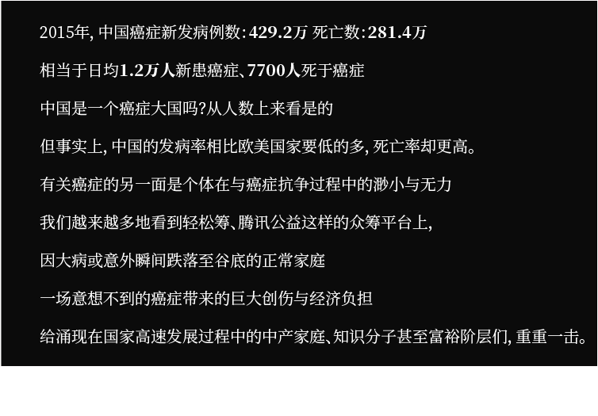

先看一个简单的数据统计：2012年中国癌症发病人数为306.5万，约占全球发病的五分之一；癌症死亡人数为220.5万，约占全球癌症死亡人数的四分之一。 显然，这是一个谁也不能忽视的有着庞大基数的群体：四分之一的癌症患者来自中国。
从癌症患者的数量上看，中国患癌人数逐年攀升。 但事实上，中国的癌症发病率在全球范围来看处于相对较低的水平。 下图统计了全球183个国家在2012年的年龄标准化发病率与死亡率，可以看出，绝大多数欧美国家的癌症发病率都高于中国，而中国的死亡率却高于绝大部分欧美国家。
ASR：age-standardized rates，标准年龄化率。为了避免各国由于年龄结构不一致而统一采用标准化年龄结构来计算发病率与死亡率。Age-standardised rates reflect the rate—for example, incidence (number of new cases) or mortality (number of deaths)—that a population would have if it
had a standard age structure.
数据来源:GLOBOCAN IARC (http://gco.iarc.fr/today) World Health Organization
为何中国癌症的死亡率高，一个重要的原因是患癌类型的区别。中国多发的癌症是肝癌与肺癌，而欧美多发是乳腺癌、前列腺癌与皮肤癌。
全球83%的新发现肝癌在发展中国家，其中一半在中国；超过70%的新发现胃癌在发展中国家，其中一半在东亚（主要是在中国）；超过80%的食道癌、85%的宫颈癌在欠发达地区，其中东亚和非洲是重灾区。
这些高致死率的癌症多发生在发展中国家，因此被称为“穷癌”
而近年来，随着人们生活水平的提高，多发生在欧美富裕国家的乳腺癌也悄然登入中国